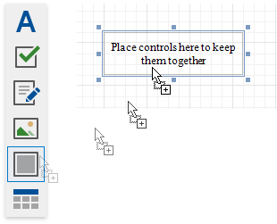
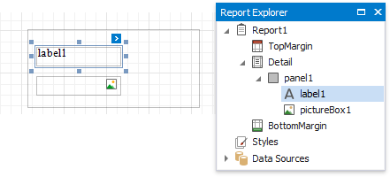
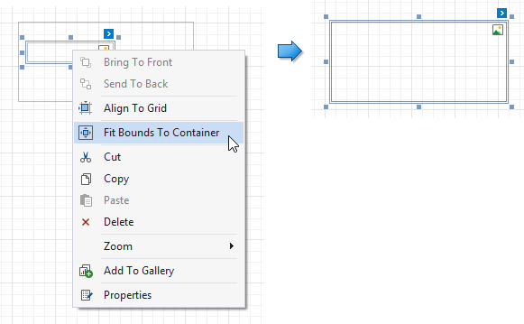
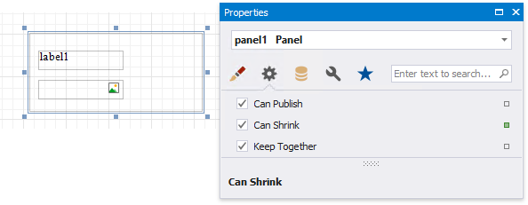

Panel
The Panel control is a container that frames separate report controls and allows you to move, copy and paste them. The panel also visually unites report controls in Print Preview (for instance, with borders or a uniform color background).
To add a panel to a report, drag the Panel item from the Toolbox and drop it onto the required report band.

Drop the desired report controls onto the panel to combine them to a group.

You can use this panel to move, copy, change appearance settings, etc. instead of adjusting individual controls.

The Report Explorer displays controls placed onto a panel as its subordinate nodes.

The panel cannot contain the following report controls:
If a panel includes only one control, you can use the Fit Bounds to Container command in the context menu or in the Layout toolbar tab. This command resizes the control so that it occupies all the available container space (excluding borders).

You can also enable the panel's Can Shrink property to automatically adjusts the panel's size to fit all the inner controls. For instance, this allows preventing blank areas when you conditionally hide specific controls.

Note
The Panel control cannot span several report bands as cross-band controls can.